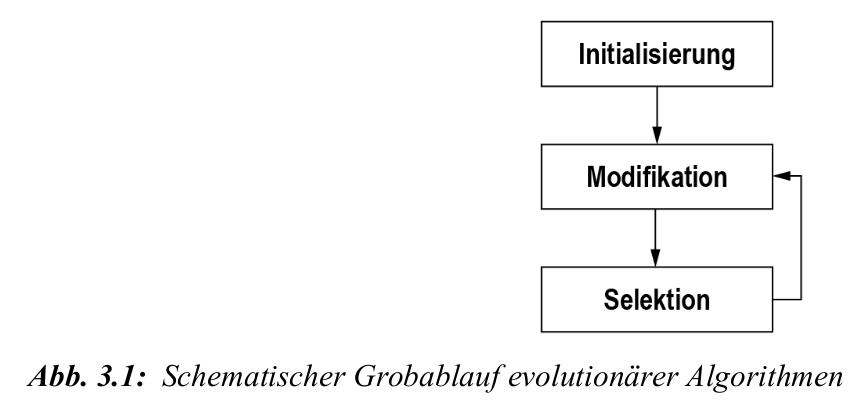
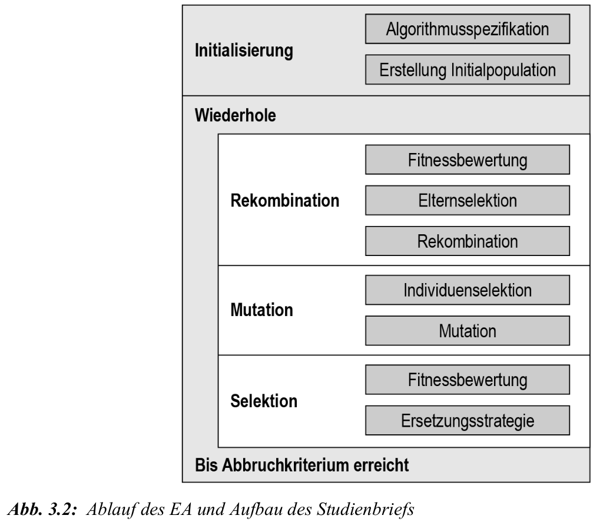

Evolutionäre Algorithmen - Grundlagen
Biomimikry
- Japanischer Hochgeschwindigkeitszug Shinkansen:
- Design am Eisvogel-Schnabel orientiert
- Tunnellärm und Energiebedarf sanken (\(\approx -15\,\%\))
- Geschwindigkeit stieg (\(\approx +10\,\%\))
Grundideen
- Übertragung von Naturprinzipien auf neue Kontexte
- Evolutionäre Algorithmen (EA) sind populationsbasiert
- imitieren natürliche Evolution: Variation + Selektion
- “bessere” (Fitness) Individuen vermehren sich häufiger
- vorteilhafte Eigenschaften werden vererbt, nachteilige verschwinden
- Charakter
- EA sind Heuristiken – nicht zwingend optimal, aber in kurzer Zeit sehr gute Lösungen
- Einordnung und Fokus
- Untergruppen: genetische Algorithmen, Evolutionsstrategien, evolutionäres Programmieren, genetisches Programmieren
- in diesem Studienbrief Fokus: genetische Algorithmen
- Anwendung im ML
- EA eignen sich zur Hyperparameteroptimierung von Verfahren des maschinellen Lernens
- EA = Variation + Selektion \(\ra\) Weiterentwicklung der Population
- initiale Population
- Variation je Generation
- Ziel: (lokales) Optimum, Annäherung an globales Optimum
- Bezug zur Natur (DARWIN)
- fittere Individuen vermehren sich häufiger
- vorteilhafte Eigenschaften werden vererbt, nachteilige verschwinden
- Untergruppen: genetische Algorithmen, Evolutionsstrategien, evolutionäres Programmieren, genetisches Programmieren
- Fokus hier: genetischer Algorithmus für Hyperparameteroptimierung
Natürliche Evolution
Grundbegriffe:
- Genom: alle Gene
- Allel: konkrete Ausprägung eines Gens
- Genpool: Gesamtheit aller Allele in einer Population
Genom wird auch Genotyp genannt \(\ra\) Bauplan
Phänotyp \(\ra\) Erscheinungsform (Fellfarbe bei Hasen)
Gesamtheit Phänotyp und Genotyp: ein Individuum
Verändert sich der Genotyp, so ändert ggfs. Phänotyp und damit das Individuum
Änderung des Genotyps: durch Mutation und/oder Rekombination
Genetische Operatoren & Selektion
Mutation: zufällige Veränderung des Genotyps
- Ursache: Fehler beim Kopieren (z.B. Zellteilung)
- Effekt: kann Phänotyp signifikant ändern oder wirkungslos sein
Rekombination: Mischung zweier Genotypen (Eltern \(\ra\) Kinder)
- Resultat: Nachkommen erhalten gemischten Genotyp der Eltern
Mutation + Rekombination \(\ra\) Diversifizierung des Genpools
Fitness: vorteilhafte Eigenschaften, die Überleben & Rekombination fördern
- Konzept: “Survival of the fittest” (DARWIN)
- Definition “fittest”: bestens an die Umwelt angepasst
- Beispiel: weißer Hase im Schnee \(\ra\) höhere Überlebenschance
Selektion: sichert “Survival of the fittest”
- Wirkt an zwei Punkten:
- Bei Rekombination: Phänotyp beeinflusst Paarungswahrscheinlichkeit
- Überlebenschance: Phänotyp beeinflusst Lebensdauer & weitere Rekombinationen
- Wirkt an zwei Punkten:
Absolut. Hier ist die überarbeitete Zusammenfassung von Kapitel 3.1.2 im angepassten Stil:
Elemente von EAs
Grundprinzip: Simulation der Evolution im Computer, wobei das Problem in ein formales Modell überführt wird
Individuum: Stellt einen einzelnen Lösungskandidaten für das Problem dar
Genotyp: Die Bauanleitung der Lösung, oft als Datenstruktur wie ein Array repräsentiert
Phänotyp: Die “fertig gebaute”, bewertbare Lösung, die aus dem Genotyp interpretiert wird
Population: Die Gesamtmenge der verschiedenen Lösungskandidaten (Individuen)
Fitnessbewertung: Ordnet jedem Individuum einen numerischen Fitness-Score zu, um die Qualität der Lösung mess- und vergleichbar zu machen
Genetische Operatoren: Steuern die Suche über ein Wechselspiel aus Diversifikation (breite Suche) und Intensivierung (Suche in vielversprechenden Bereichen)
Selektion: Wählt Individuen basierend auf ihrer Fitness für die Rekombination und das Überleben aus
Rekombination: Kombiniert vorteilhafte Eigenschaften von Eltern, um potenziell überlegene Nachkommen zu erzeugen
Mutation: Erzeugt zufällige Änderungen im Genpool, um neue Variationen zu schaffen und das Feststecken in lokalen Optima zu verhindern
Ablauf evolutionärer Algorithmen
Im Gegensatz zur chaotischen, asynchronen natürlichen Evolution folgt ein Evolutionärer Algorithmus (EA) einem fest vordefinierten und synchronen Ablauf
Synchroner Prozess: Alle Individuen einer Population durchlaufen die verschiedenen Evolutionsphasen gleichzeitig und im Gleichschritt
Struktur: Der Prozess gliedert sich in drei übergeordnete Stufen. Die letzten beiden, Modifikation und Selektion, bilden zusammen eine Generation
Wiederholung: Dieser Generationszyklus wird wiederholt, bis ein vorher festgelegtes Abbruchkriterium, wie eine maximale Anzahl an Generationen oder die erreichte Güte der Lösung, erfüllt ist

Generationsentwicklung: Die Population entwickelt sich schrittweise über mehrere Generationen hinweg
Übergang: Eine neue Generation entsteht, indem Nachkommen aus dem genetischen Material der aktuellen Generation erzeugt werden und nur die fittesten Individuen überleben
Lösung: Nach Abschluss des gesamten Evolutionsprozesses wird das fitteste gefundene Individuum als die Lösung für das Problem interpretiert

Überblick über den Gesamtcode
import numpy as np
from sklearn.datasets import load_digits
import random
from sklearn import tree
from sklearn.model_selection import cross_val_score
from sklearn.model_selection import train_test_split
from statistics import mean
def main():
(popsize, x, y, x_test, y_test, generationen,best, score, score_n, Nachkommen) = Initialisierung()
population = Anfangspopulation(popsize)
score = fitness(population, popsize, x, y, score)
start = mean(fitness(population, popsize, x_test, y_test, score))
for gen in range(generationen):
roul = roulette(score)
for j in range(0, popsize, 2):
Elter_1, Elter_2 = selektion(popsize, population, roul)
Nachkommen[j], Nachkommen[j + 1] = rekombination(Elter_1, Elter_2)
Nachkommen = mutation(Nachkommen, popsize)
score_n = fitness(Nachkommen, popsize, x, y, score_n)
population += Nachkommen
score += score_n
population = [population[j] for j in sorted(range(len(score)), key=lambda i: score[i])[-popsize:]]
score = [score[j] for j in sorted(range(len(score)), key=lambda i: score[i])[-popsize:]]
best[gen] = max(score)
ende = fitness(population, popsize, x_test, y_test, score)
print(ende[popsize-1]-start)
plt.plot(best)
plt.show()
def Initialisierung():
digits = load_digits()
X, X_test, y, y_test = train_test_split(digits.data, digits.target, test_size = 0.2)
popsize = 10
generationen = 10
best = [None] * generationen
score = [0] * popsize
scoreN = [0] * popsize
Nachkommen = [None] * popsize
return popsize, X, y, X_test, y_test, generationen, best, score, scoreN, Nachkommen
def Anfangspopulation(popsize):
population = []
c = ['gini','entropy','log_loss']
for i in range(0,popsize):
crit = random.choice(c)
max = int(round(random.random()*9+1))
min = int(round(random.random()*9+2))
individuum = [crit,max,min]
population.append(individuum)
return population
def fitness(population, popsize, X, y, score):
for i in range(0,popsize):
clf = tree.DecisionTreeClassifier(criterion=population[i][0], max_depth=population[i][1], min_samples_split=population[i][2])
score[i] = mean(cross_val_score(clf,X,y,cv=3))
return score
def roulette(score):
score = score / sum(score)
roul = np.cumsum(score)
return roul
def elterselektion(roul,popsize):
zufallszahl = random.random()
Elter = 0
for i in range(0,popsize):
if (zufallszahl >= roul[i]):
Elter = i + 1
return Elter
def selektion(popsize,population,roul):
Elter1 = population[elterselektion(roul,popsize)]
Elter2 = population[elterselektion(roul,popsize)]
return Elter1, Elter2
def rekombination(Elter1, Elter2):
crossover = int(round(random.random()+1))
Kind1 = Elter1[0:crossover] + Elter2[crossover:]
Kind2 = Elter2[0:crossover] + Elter1[crossover:]
return Kind1, Kind2
def mutation(population,popsize):
Mutationswahrscheinlichkeit = 0.2
for i in range(0,popsize):
if random.random() < Mutationswahrscheinlichkeit:
Allel = int(round(random.random()*2))
if Allel == 0:
c = ['gini','entropy','log_loss']
crit = int(round(random.random()*2))
population[i][Allel] = c[crit]
elif Allel == 1:
population[i][Allel] = int(round(random.random()*9+1))
elif Allel == 2:
population[i][Allel] = int(round(random.random()*9+2))
return population
if __name__ == '__main__':
main()